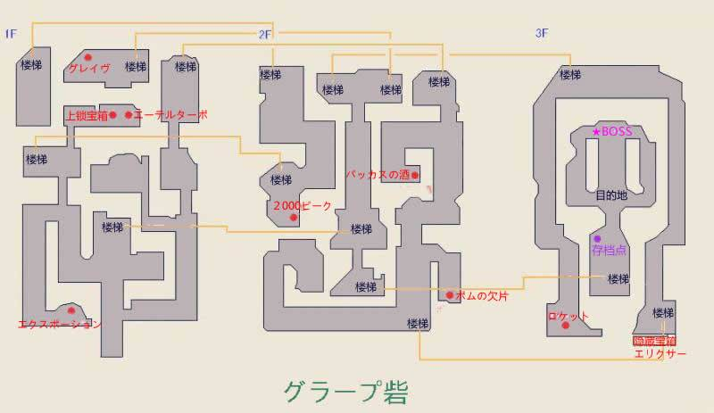
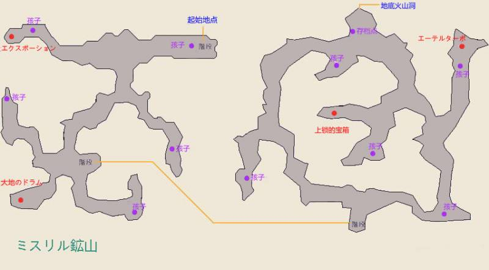
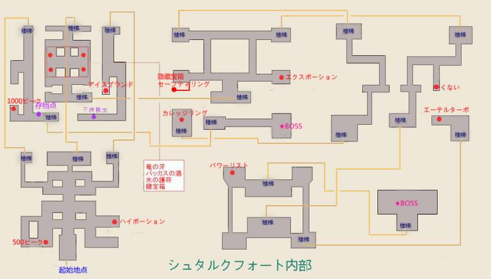
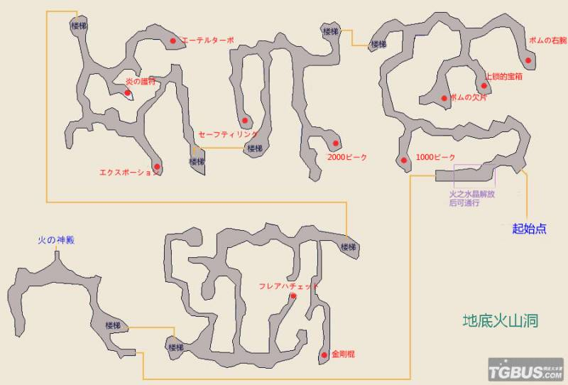
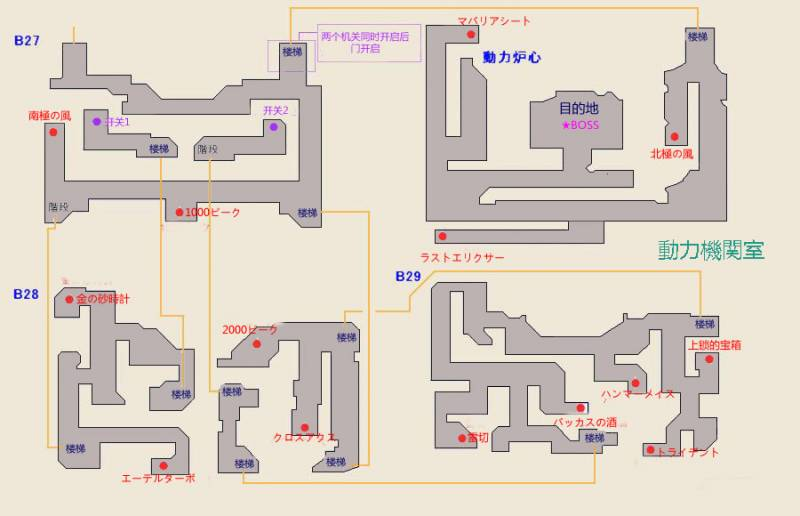

第三章 动人的羁绊呐
正在航行之中，林格阿贝尔忽然大声呼喊，表示发现了什么。呈现在众人面前的是一艘静止不动豪华巨轮。
-登上巨轮
-前往商业区与ラッツ对话
-返回酒馆
得知ラッツ来自火之水晶所在的エイゼンベルぐ，目前该国正处在内战状态，局势相当不稳定。新起的叛军剑派雇佣阿塔尔尼亚公国佣兵队黑铁之刃，致使ラッツ所属的盾派（エイゼンベルぐ正规军）处于被压制劣势状态。ラッツ还提到了几年前巫女及巫女继承人被暗杀的事。这又激起了阿尼艾斯解放水晶的信念，但被告知由于火山爆发难以到达。最终四人带着受伤的ラッツ先前往其伙伴所在地，再一同另想办法。
-返回大地图，前往“！”处
见识了提兹等人的强大，ラッツ请求四人帮助自己拯救盾派，却被阿尼艾斯拒绝了，阿尼艾斯表示自己只想履行巫女的使命，没有时间卷入战事之中。
-由大地图向西南方前进
借小道行走的众人还是遇到了伊蒂亚的师父，剑圣（师父我把你送的剑卖了对不起……）。
伊蒂亚：果然说到剑圣，只能是黑铁之刃的团长，师父你了……师父，请告诉我！为什么你要帮助剑派叛乱呢！在原本和平的国家中挑起战乱，这真的是师父的本意么？！
团长：你还是先弄清楚自己在做什么吧。居然和巫女一起，放任两个水晶暴走，多么愚蠢的行为啊……从以前开始你就是这样，不顾大局，只凭自己的感情行事，没想到直到今天还是没有改变。
伊蒂亚：什么才是大局啊！引起战争不管怎么想都不是正义的一方该做的事吧！
团长：竟然妄图以正义和邪恶论战争，你果然还只是个不成熟的孩子呢。但是你干涉水晶这件事，不能用孩子的游戏这种借口搪塞过去。就算你是我的弟子，就算你是我无可取代的挚友的爱女，如果你还要一意孤行，将世界推向危险的处境，为师我会用自己的剑……
正在此时，佣兵通报了剑派别动队擅自撤退的消息。剑圣决定先放弃捕捉巫女，前去稳定局势。他最后警告伊蒂亚不要再执着于自己愚蠢的决定，转身离开了。
-由大地图向“！”前进
有惊无险，众人终于见到了盾派司令官。面对司令官的感谢，阿尼艾斯却始终只用冷冰冰的话语解释自己只想履行巫女的使命，解放火之水晶，对干涉战争毫无兴趣。尽管如此，司令官还是表示会尽其所能帮助众人到达火之神殿。
-由大地图向ハルトシルト
-进入司令住处
-返回エイゼン大橋
提兹终于说服逐渐偏激的阿尼艾斯，众人决定协助盾派。提兹等人的第一个任务，就是获取グラープ砦处几年前虐杀十万士兵毒烟的样本，以调查其正体。
-由大地图东北方前往グラープ砦
グラープ砦

逐一打开机关后终于取到了样品，正在此时警报响起，四人只好迎战。
★BOSS战 オートマトン×2（HP10000，弱雷）
Tips:根据弱点就能轻松取胜。
-返回エイゼン大橋
一波未平一波又起，众人刚把样本交给司令，剑派就发起了攻势。众人再次为了解放被压迫的孩子们，夺回盛产ミスリル鋼（秘银钢= =...？）的ミスリル鉱山开始奔走。
-由大地图向西北前往ミスリル鉱山
ミスリル鉱山

提兹告知了被劳工孩子自己的来意，让他通知自己的伙伴一起逃跑。不料还是被佣兵发现了。
-战斗 黑铁之刃斧兵 HP3000 弱雷
Tips:共需进行十场战斗。B1、B2各五场。均只有一个敌人。枪兵会使用反击技能（弓也反击不科学）。
此处小怪会使用魅惑效果攻击。B2会有类キレート山BOSS级小怪出现，请注意。
-返回B1触发剧情
最初的少年提到他们还有一个同伴エギル被带去了佣兵指挥所，提兹承诺一定会救出他的同伴。
-前往アジト
劍派アジト シュタルクフォート

Tips:此处刀兵会引起混乱异常，枪兵会对物理攻击进行反击。请准备好对策。
1F左方楼梯向上一直到底为药师支线，lv40左右做会比较轻松。
1F右方楼梯向上，在2F处发现了エギル。从エギル口中又得到了和火之巫女有关的消息。不过由于事态紧急，提兹等人决定先回到ハルトシルト后再仔细询问。
-返回ハルトシルト
醒来后的エギル执意要返回矿山，原来エギル在梦中被火之巫女托付引导风之巫女由坑道深处进入火之神殿。终于找到了办法的四人休息了一夜，立刻出发前往ミスリル鉱山。
-前往ミスリル鉱山
ミスリル鉱山
就在提兹等人快要到达的时候，眼前出现了被佣兵追赶的エギル。
-战斗 黑铁之刃斧兵/刀兵/枪兵 HP3000，弱雷
提兹：我不是告诉过你不要跟来了么！
エギル：可是，打开秘道的办法只有我才知道。
阿尼艾斯：诶？
エギル：要打开那个秘道，要先进入一个狭小的洞穴里，这种事哥哥你们都做不到的吧！绝对钻不进去的吧！
水晶妹子：这种事之前怎么没有听你提过！骗人的吧！
エギル：才没有骗你们，只是我没有说而已。
水晶妹子：没差别吧！不过不好意思啦，有我在的话再～～怎么小的洞穴都是没～～有问题的～
エギル：嘿嘿，艾琳的话就小过头了，要开启秘道还需要转动一块大石头噢。
水晶妹子：石头什么的！之前根本没听说过啊！
エギル（揉鼻子）：这个也刚好没有说。
阿尼艾斯：那么，エギル就和我我们一起走吧。
提兹：不可以！如果这孩子出了什么事的话该怎么办！
水晶妹子：提兹，你对阿尼艾斯吼个什么劲啊！为什么这么生气啊？
提兹：……我……
阿尼艾斯：那么提兹，你的意思是让エギル一个人从这里走回去么？
提兹：这种事也不行，我们一起先送他回去。
阿尼艾斯：这段时间里被剑派或者黑铁之刃抢了先机的话，你又打算怎么办呢？エギル刚才可是被敌人袭击了哦？之前在指挥处的时候也是一直被监//禁着，说不定都是因为他知道秘道才会……！
提兹：但是……！
阿尼艾斯：我认为应该以解放水晶为最优先才对！
水晶妹子：就是说啊！净化笼罩着世界的黑暗，就算多多少少有些牺牲也是……
提兹：不可以！牺牲什么的，我再也不想有任何一个人牺牲了！
阿尼艾斯：太过分了……为什么说出这种话……最近的提兹，好奇怪！！你是打算践踏我、エギル，以及已经亡故的火之巫女的意志和信念吗！这种事，作为巫女的我是绝对不会容许的！不要妨碍我完成自己的使命！
伊蒂亚：……你们两个人，都稍微冷静一下！
提兹（思索许久缓缓开口）：……太像了呐……エギル和我死去的弟弟……提尔……
阿尼艾斯：诶？
提兹：那个大洞忽然出现的时候，整个村庄都毁于一旦的时候……和エギル同龄的我的弟弟，就这么在我的眼前，掉进黑暗之中了……我没能保护他……我没能拉住提尔的手……那个时候提尔的脸，直到现在还历历在目……水之巫女的时候也是，看着她的生命一点一点的流逝，心里非常难受……那个时候阿尼艾斯悲伤的流着眼泪的样子，我再也不想再看到了……那样难受的回忆已经太多了，所以，不想让エギル和我们一起去那么危险的地方，就算是为了拯救世界，也不想……
林格阿贝尔：唔，那么提兹，为什么在阿尼艾斯面对危险的时候，你没有阻止她呢。
提兹：因为，就算我想要阿尼艾斯，她也会一个人不顾一切地去做吧……而且，我已经和阿尼艾斯约好了，会一直和她在一起的。一直在一起的话，我也能够守护她……
阿尼艾斯：提兹……
林格阿贝尔：答案不是已经很明显了么？
伊蒂亚：诶？什么意思？
林格阿贝尔：エギル也和我们一起去吧，提兹，不对，我们全员都会好好保护他的。对吧？
提兹：……
エギル：哥哥，拜托了！我都已经和火之巫女大人承诺过了！
提兹：……知道了，呐，エギル，绝对不能离开我的身边噢？
-前往2F
エギル打开了秘道，呈现在众人眼前的是满是岩浆的地底火山洞。
地底火山洞

Tips:会有时隐时现的熔浆出现，踩到会有伤害。请注意时机。
怪物会造成沉默/黑暗异常状态，请做好应对措施。
-深处触发事件
突如其来的地震让エギル陷入了危机。不想让弟弟的悲剧再次重演，这一次，提兹终于握住了エギル的手，但同时提兹自己也险些掉入岩浆。关键时刻阿尼艾斯不顾艾琳的阻挠，不计个人安危抓住了提兹的手，在大家的帮助下，提兹和エギル终于化险为夷。众人的羁绊也因此更进一步。
（半夜打的游戏，这段对话漏掉了……二周目补上吧Orz，非常抱歉，不过在救人的时候阿尼艾斯还是路痴啊……果然路痴这种属性是刻进骨子里的）
-进入火之神殿
定番魔物出现。
★BOSS战 チャウグナル（HP30000，弱雷）
Tips：该BOSS非常不讨喜，会吸血吸蓝吸BP。开局就处于无敌状态，此时任何攻击无效。无敌解除后会放群体伤害1000+的攻击，此回合请务必防御。
幸好皮不是很厚，存好BP根据弱点一口气攻击就能过关。
-解放火之水晶
*支援技能栏+1
Tips：火之神殿也有个技能プロメテウスの火。照旧挨一下秘籍拿回家。伤害较高，身体不好的小朋友不要跟着学。
-返回入口
众人发现矿山有了变化，似乎是由于火之水晶的解放，火山不再活跃，矿脉也因此消失了（……又不是化霜，一下子全没了……）。提兹等人决定先回去和司令商量后再做打算。
-前往エイゼン大橋
阿尼艾斯向司令官汇报了火之水晶被解放，火山重归平静以及所有的矿脉都消失了一事。司令官表示这样反而更好，只要剑派失去了做弹头的材料，盾派也没有后顾之忧了。战局因此改变，内战结束在即，被当作劳工的少年们也被民众收养。一切似乎都逐渐开始好转起来。
-前往ハルトシルト
エギル执意要与提兹等人同行，提兹为难之下提议先去司令官府地拜访后再做商量。
-前往司令官住宅
エギル被司令官夫人说服，不情愿地留了下来。
-使用不能飞的飞行船前往豪华游轮
-进入酒馆，与左上方男人对话，得知卡鲁迪斯拉王国旅馆因旅馆爷爷病倒而停业了
-前往卡鲁迪斯拉旅馆
病床上的爷爷在昏迷中还是呢喃着儿子的名字。经剧透小本本指示，应该撮合（……这词用的不好我自重）旅馆爷爷和エギル。
-去ハルトシルト接回エギル
-前往卡鲁迪斯拉王宫（……各位跑腿辛苦了）
提兹向王说明了エギル的情况，エギル终于找到了自己的新家。有了新寄托的爷爷精神也大为振作，病情大有好转。
为了最后的土之水晶，众人要找出前往阿塔尔尼亚的办法。
-前往豪华游轮
在酒馆老板娘的盛情款待下，众人各自点了喜欢的食物。饱餐之后ラッツ两人出现，表示巨轮即将沉没，建议老板娘迅速撤离。
-前往商业地区，进入巨轮内部
搜寻之下，找到了一份用古语写的文件。经阿尼艾斯阅读，发现要防止巨轮沉默，需要将オリハルコン投入动力室深处，而オリハルコン正是上次在エギル处见到的东西。
-前往卡鲁迪斯拉旅馆，取回オリハルコン，再返回
将通知居民避难的事交给了ラッツ，提兹一行人向动力室深处进发。
動力機関室

Tips:小怪多弱雷，不会给异常状态，相当和蔼可亲。
众人来到动力室深处，定番出现魔物。
★BOSS战 べヒュモス（HP50000，弱雷）
Tips：BOSS物攻极高，会使用毒性技能。被秒是常事。皮比较薄（并且未进行明星支线）的队伍建议采取防御+一口气攻击的战略。有明星职业提升物防会比较轻松。
化险为夷的众人发现，原来这艘巨轮其实也是飞行船。这下终于找到前往阿塔尔尼亚的办法了。
*グランしっプ号教程
-前往“！”处